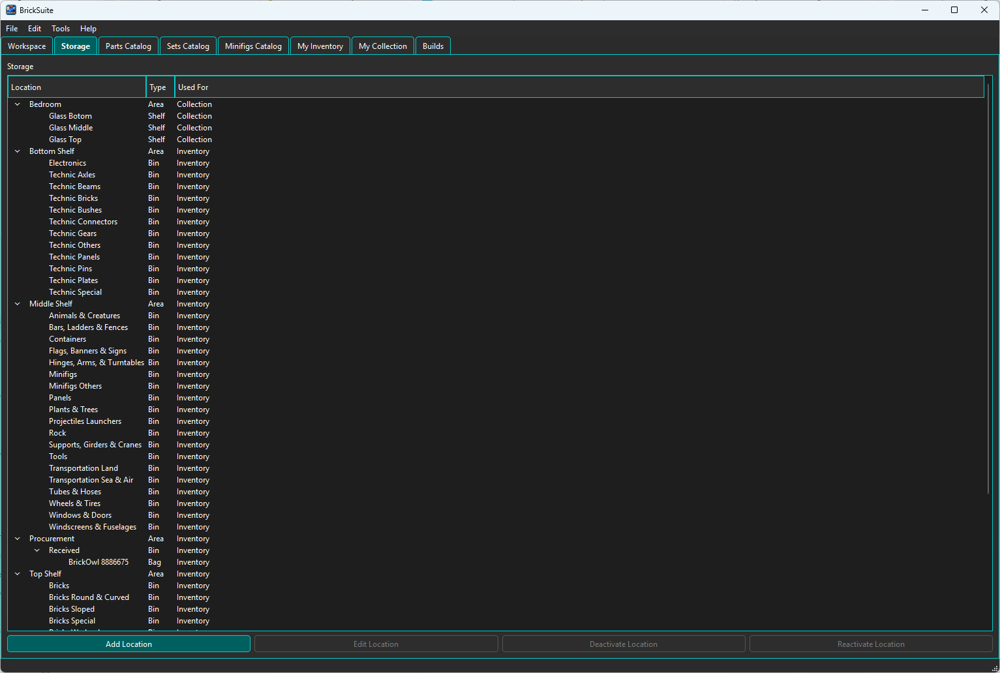
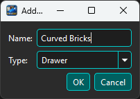
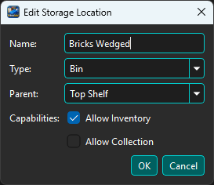
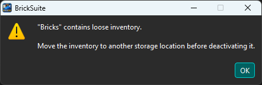

Storage is BrickSuite's digital representation of the places where your loose parts physically live. A useful Storage hierarchy should answer a simple question: Where do I go in the real workshop to find this part?
The hierarchy is intentionally flexible. You can model cabinets, shelves, drawers, bins, dividers, and other containers in the arrangement that matches your actual workshop.
The Storage page presents locations as a parent/child tree. Expanding a location reveals the locations contained beneath it. The Type column identifies what each location represents physically.

In the example above, Cabinet Bricks contains a drawer named Basic Bricks, which is further divided into Black, Other Colors, and Red sections. Other branches represent shelves containing category-based bins. BrickSuite does not require every branch to have the same depth.
Locations marked (Inactive) remain visible in the hierarchy so historical information is preserved, but they are no longer treated as active storage destinations.
BrickSuite provides the following location types:
Area, Cabinet, Shelf, Case, Drawer, Bin, Bag, Tray, Compartment, and Divider.
The type describes the physical location; it does not impose a rigid hierarchy. For example, a Cabinet can contain Drawers, while a Shelf might contain Bins directly. Choose the type that best describes the real container.
Select the location that should contain the new location, when applicable, and choose Add Location. Enter a descriptive name and select the physical location type.

Names should make sense when viewed in the hierarchy. Category names such as Curved Bricks, Technic Beams, or Wheels & Tires can be useful when a physical drawer or bin is dedicated to that group of parts.
Choose OK to create the location or Cancel to leave Storage unchanged.
Select an existing active location and choose Edit Location. BrickSuite lets you update the location name, type, and parent relationship.

Changing the parent lets the digital hierarchy follow a physical reorganization without requiring the location to be recreated. For example, a drawer can be moved under a different cabinet while retaining its identity in BrickSuite.
BrickSuite uses deactivation instead of simply deleting storage locations. This protects inventory integrity and preserves historical references to locations that existed previously.
A location cannot be deactivated while loose inventory is still stored there. If you attempt to do so, BrickSuite explains why the operation cannot continue:

Move the loose inventory to another active storage location first, then return to Storage and deactivate the old location.
BrickSuite also protects hierarchical integrity: a parent location cannot be deactivated while it still has active child locations. Reorganize or deactivate the child locations first.
Inactive locations remain in the Storage tree and are identified with (Inactive). When an inactive location is selected and can be used again, choose Reactivate Location to return it to active service.
This makes temporary storage changes reversible without losing the history associated with the location.
Storage and My Inventory work together. Storage defines the physical destinations; My Inventory records which loose parts are stored in those destinations.
When adding, importing, editing, or moving inventory, choose an appropriate active storage location. If the workshop is reorganized later, use BrickSuite's inventory movement workflow so the database history reflects where the parts went.
See My Inventory for adding, editing, moving, filtering, and reviewing loose inventory.
A simple hierarchy might look like:
Cabinet Bricks
Basic Bricks
Black
Other Colors
Red
Shelf Bottom
Technic Axles
Technic Beams
Technic Bricks
Technic Gears
Another workshop might organize the same parts very differently. BrickSuite's goal is not to prescribe the organization; it is to create an accurate digital twin of the organization you actually use.
Getting Started | My Inventory | Rebrickable Import
Each location can allow Inventory, Collection, or both. Inventory-capable leaf locations appear as destinations for loose parts. Collection-capable leaf locations appear for physical Sets, Minifigs, and MOCs in My Collection.
A parent may have neither capability when it is used only to organize eligible descendants. Capability settings determine where a location appears; a Collection-only location is never offered as a loose-inventory destination.